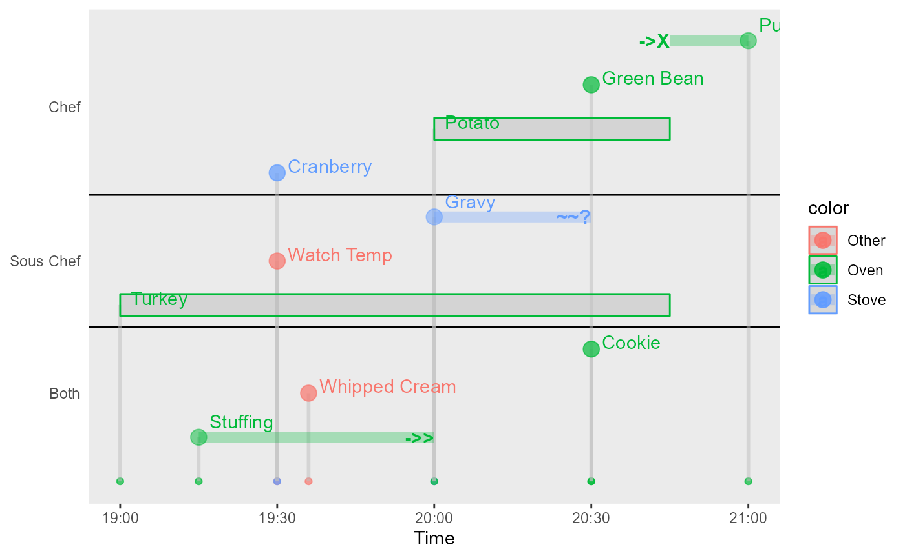
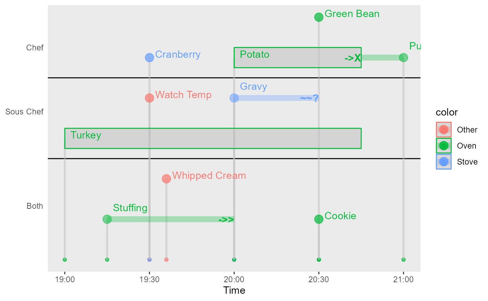

mtb: Time Related Plots
Y. Hsu
2022-10-11
Source:vignettes/vignette_mtb_timerelated.Rmd
vignette_mtb_timerelated.RmdBackground
It’s common to have observations that were measured longitudinally. Here are some functions that could present observations measured over time.
How to use - plot event periods with grouped labels
This is a basic example which shows you how to plot intervals of events with group labels at the beginning of individual intervals.
dt = data.frame( id=paste('ID', c(seq(1,5), seq(1,5)),sep=""), idn=c(seq(1,5),seq(1,5)), start=1800*seq(1,10)/3, end=1800*(seq(1,10)/3+seq(2,-2)), label=rep(c('A','B'),5) )
dt
#> id idn start end label
#> 1 ID1 1 600 4200 A
#> 2 ID2 2 1200 3000 B
#> 3 ID3 3 1800 1800 A
#> 4 ID4 4 2400 600 B
#> 5 ID5 5 3000 -600 A
#> 6 ID1 1 3600 7200 B
#> 7 ID2 2 4200 6000 A
#> 8 ID3 3 4800 4800 B
#> 9 ID4 4 5400 3600 A
#> 10 ID5 5 6000 2400 B
p=time_plot_interval( dt, xlab='Time', ylab='ID', legend_title='Group', arrow_wt=2, arrow_color='gray')
p
How to use - create a static timeline plot
There is an existing function vistime::gg_vistime() that
creates plots for time periods or single time points. There is also an
article by Ben Alex Keen that uses ggplot2 for plotting a
series of events.
The time_plot_event() function creates a simplified
timeline plot.
dt = data.frame( id=c(rep('Sous Chef',3), rep('Both',3), rep('Chef',4)), idn=c(rep(1,3),rep(-1,3), rep(2,4)), start=1800*c(0,1,2, 0.5, 1.2, 3, 1,2,3,4), end=1800*c(3.5,NA,3, 2, 6, NA, 2,3.5,3, 3.5),
label=c('Turkey', 'Watch Temp', 'Gravy', 'Stuffing', 'Whipped Cream', 'Cookie', 'Cranberry', 'Potato', 'Green Bean', 'Pumpkin Pie'), labelend=c('', '', '~~?', '->>', 'not shown', '', '', '', '||', '->X'), color=c('Oven', 'Other', 'Stove','Oven','Other','Oven','Stove','Oven','Oven','Oven' ), type=c('b', 'p', 'i','i','p','p','p','b','i','i' ) )
dt[1:5,]
#> id idn start end label labelend color type
#> 1 Sous Chef 1 0 6300 Turkey Oven b
#> 2 Sous Chef 1 1800 NA Watch Temp Other p
#> 3 Sous Chef 1 3600 5400 Gravy ~~? Stove i
#> 4 Both -1 900 3600 Stuffing ->> Oven i
#> 5 Both -1 2160 10800 Whipped Cream not shown Other p
time_plot_event( dt ) 
Note that the compact option can reduce the use of
vertical spaces. However, to avoid reversed interval like
event-10, the input data set should have start time <
end time.
time_plot_event( dt, compact=TRUE )